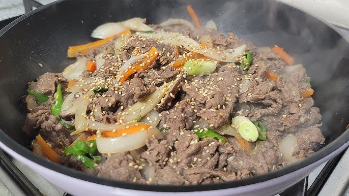

Bulgogi
Ingredients for 2-3 People
Pork arm shoulder 800g; Soy sauce: 50ml; Cooking wine: 50ml; Onion: 1/2 (grate or use blender); Minced garlic: 1 tbsp; Sugar: 2tbsp; Beef bouillon: 1/2tbsp; Black pepper: 1/3tbsp; Black bean paste: 1tbsp; Green onion: a handful, cut into long pieces; Toasted sesame seed: a shake.
Instructions
(1) Put together pork, soy sauce, cooking wine, grated onion, minced garlic, sugar, beef bouillon, black pepper, black bean paste. (2) Mix them well, and then wrap it. Let it sit for a day. (3) Grill it on low heat. (4) When the meat is done, put green onion and toasted sesame seeds.